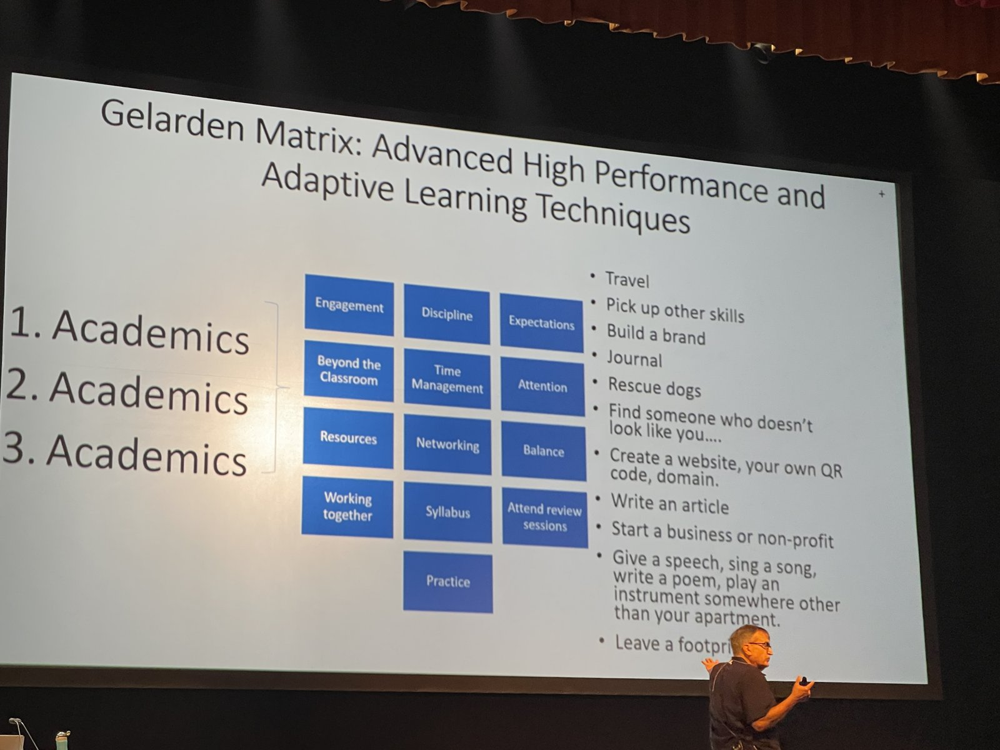

Miss Zhao · 凤凰
Picking IU or Informatics?
Pick the door that sounds like you. You get a 3-step plan next.
Choose one
One tap. Three pages out, in order, for your spot.

Miss Zhao · 凤凰
Pick the door that sounds like you. You get a 3-step plan next.
One tap. Three pages out, in order, for your spot.
